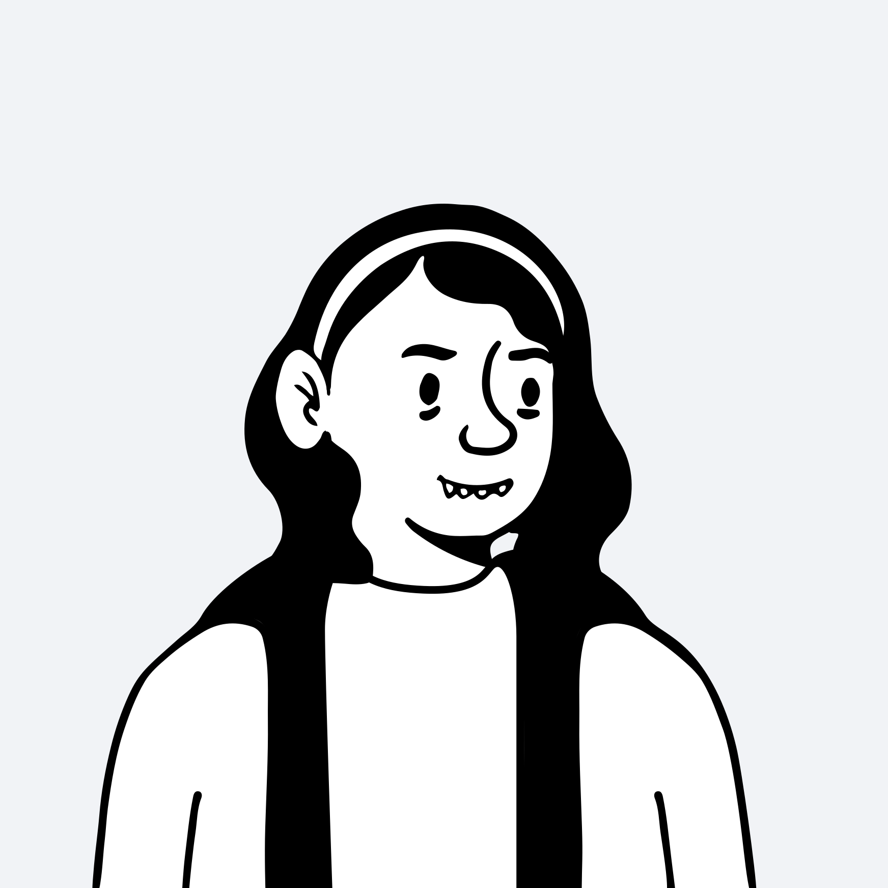
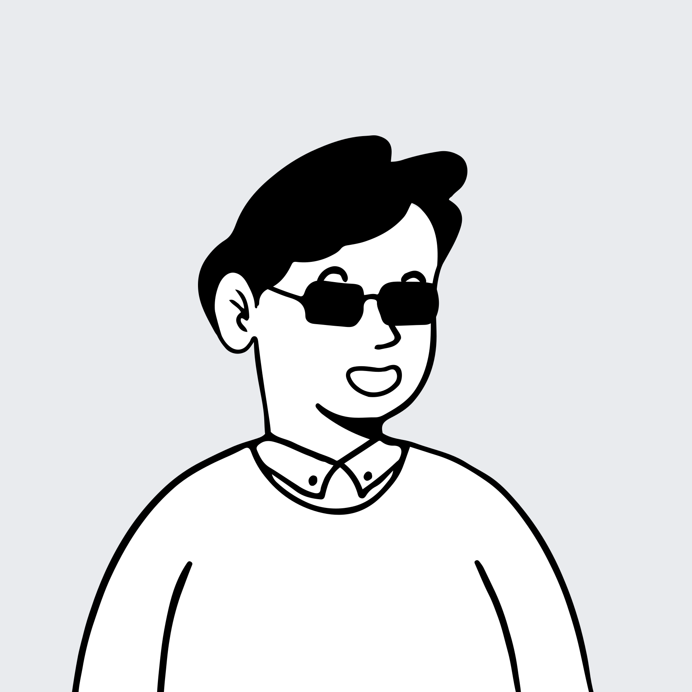
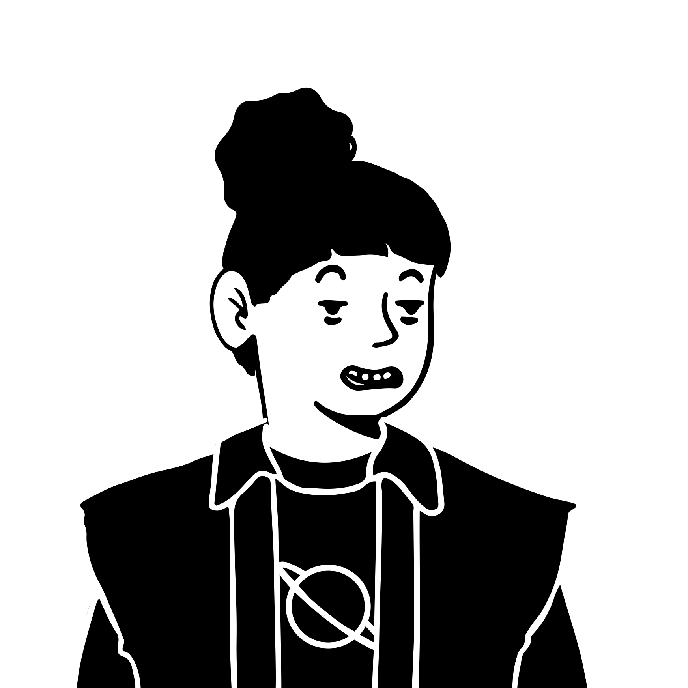
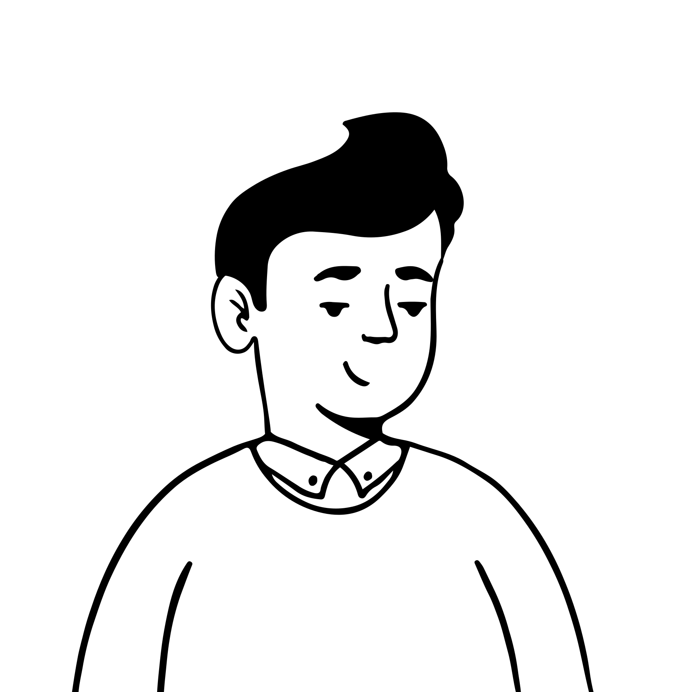
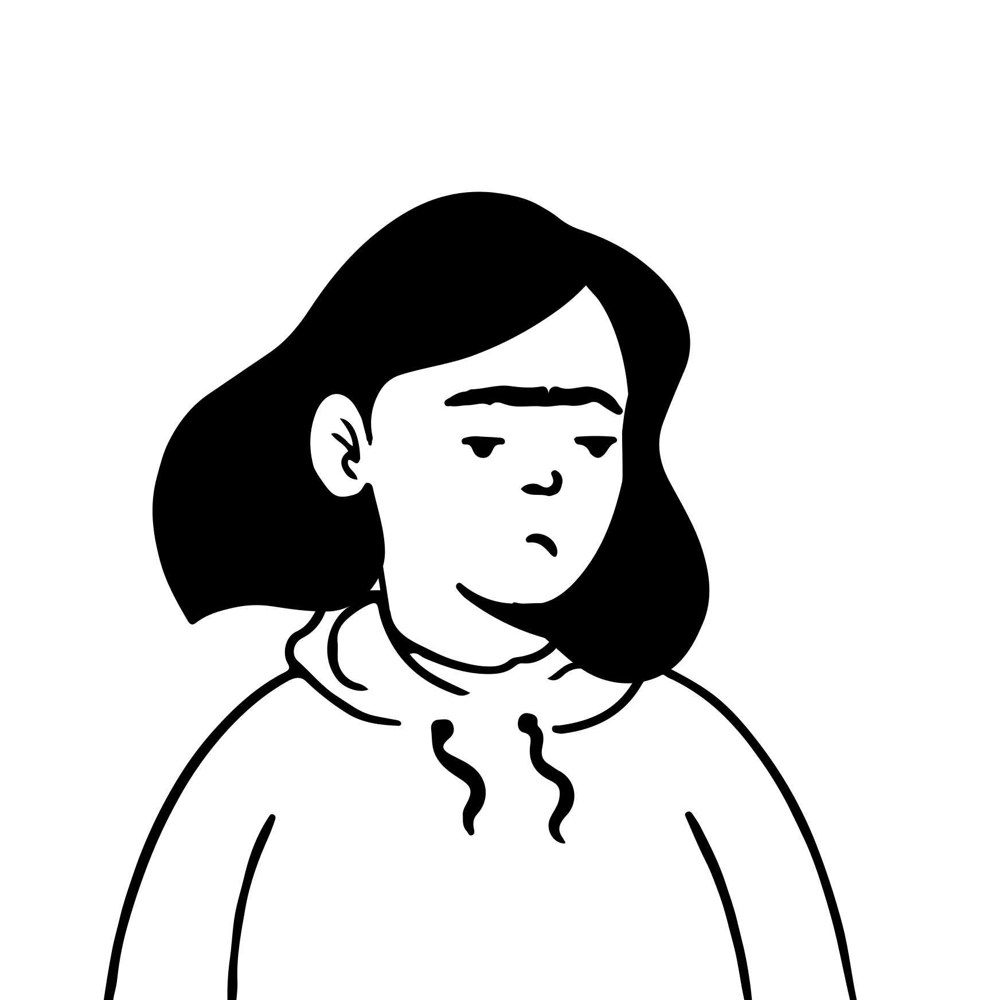
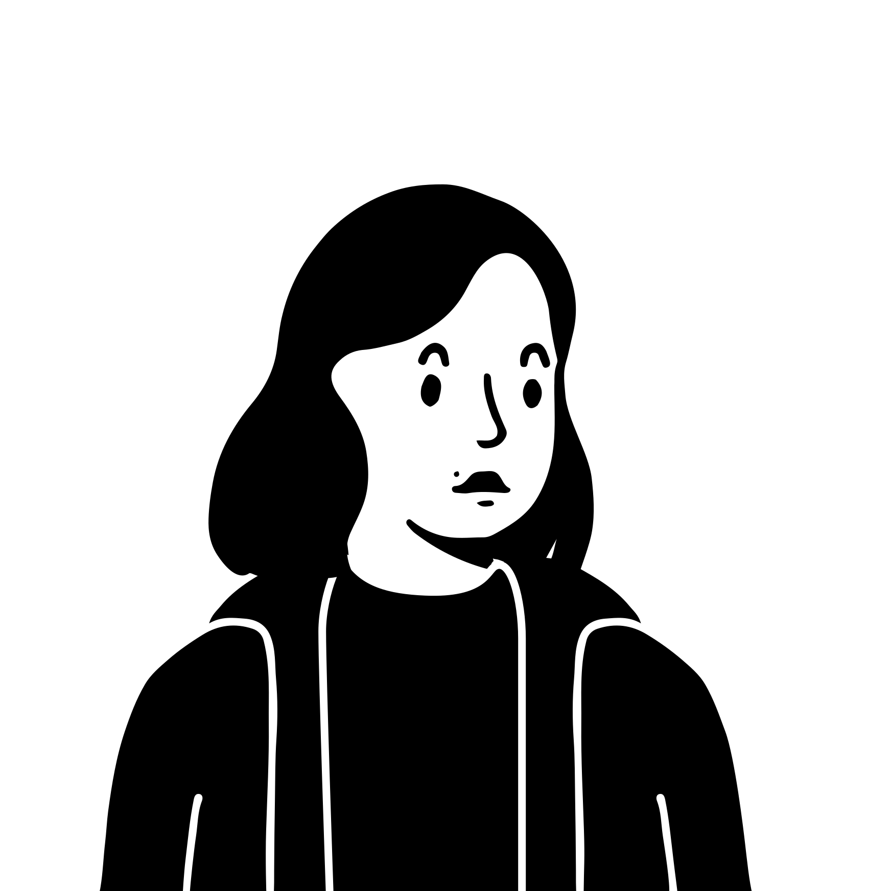
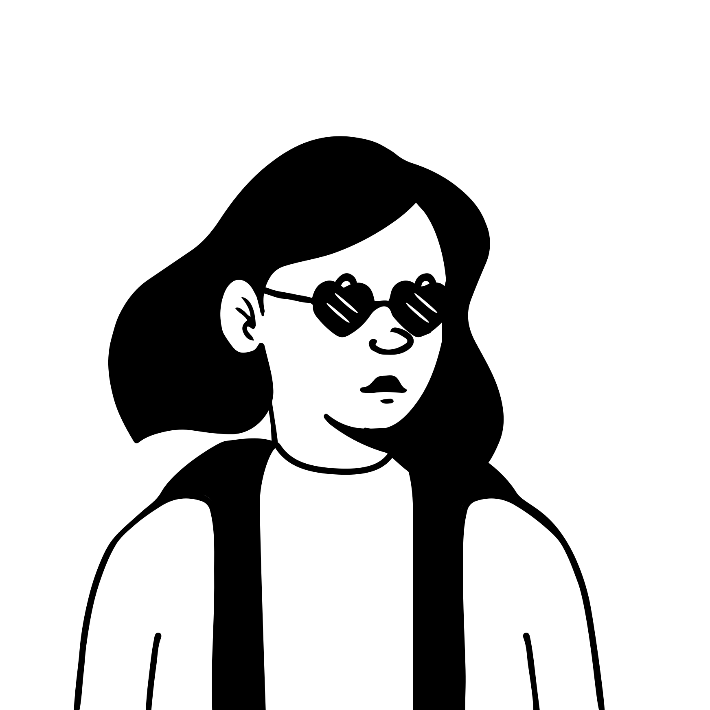
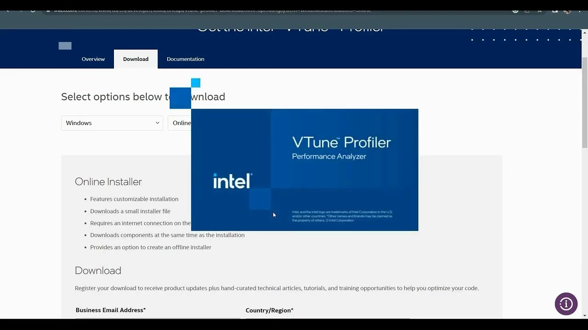

完整样本池 27 位显式样本 × 155 位用户 × 172 个问题的三角验证
完整样本池 27 位显式样本 × 155 位用户 × 172 个问题的三角验证Research Overview · merged v1.2 · 角色 → 旅程 → 触点 → 洞察 · 含月之暗面与 0610 性能工具链专家参照
00 / 研究概览
2026
2026
27位显式样本
覆盖 ASC / PyPTO / 高校训练 / 训练 Infra / 推理优化 / 性能分析 / 框架测试 / AI 基础设施 / 性能工具链专家等角色
7类角色群
研发侧、训练侧、AI 基础设施侧、推理与性能侧、高校/研究机构、平台与运维侧、数据与语料侧统一映射
155位用户
问题清单 Excel 覆盖 172+ 条记录、25+ 用户反馈，与访谈交叉验证
11个断裂点
v1.2 补强 BP-06 性能分析链路，并新增 5-15% 采样开销、通信阻塞和跨工具联动证据
统一角色系统：四层协作承载七类角色群Stakeholder System · 用户需求层 → 需求传递层 → 能力构建层 → 平台支撑层 · v1.2 纳入性能工具链专家视角
01 / 关系人地图
2026
2026
用户需求层DEMAND
算法 / 产品场景与性能目标
高校教师 / 学生科研评估
模型开发迁移与脚本
训推需求RL / 部署一致性
需求传递层RELAY
算子需求分析支持查询 · 优先级
架构 / SE需求澄清
MDE详细设计 · 精度契约
训推契约权重拓扑 · 算子映射
能力构建层BUILD
ASC 算子开发底层算子
PyPTO 开发接口封装
框架开发框架适配
推理优化训推链路
性能分析Profiling diff
性能工具链低扰动 Trace
平台支撑层PLATFORM
训练 Infra任务中控台
AI 基础设施MFU · 自动恢复
云平台 / SRE资源与告警
测试验证质量保障
数据语料质量与抽检
System Breaks
BP-02 工具链断裂
BP-06 性能分析链路
BP-05 实验管理空白
BP-09 精度/概率定位
BP-11 训推一致性断层
P0-5 统一信号流 + 自动恢复
7类角色群
新增 AI 基础设施侧，把 MFU、有效算力、自动恢复、训推一致性纳入体验系统。
4层关系
需求 → 传递 → 构建 → 平台 不再按组织切割，而按问题流转路径梳理。
11个断裂点
从算子需求、工具链、状态感知，扩展到 BP-11 训推转换与一致性。
5-15%
0610 专家补充性能分析取舍：全量采样会拖慢训练，单卡采样又可能误判通信瓶颈。
24 人用户画像宫格：从底层算子到 AI 基础设施生产侧Persona Grid · 按白皮书用户卡片样式压缩呈现 · 27 位样本去重后取 24 位展示
01 / 用户画像
2026
2026
王工 · ASC 算子开发
研发侧 · 底层算子
5 年+ 底层开发经验，C/C++、CUDA 迁移和汇编基础。
目标：高效可复用算子。
痛点：编译慢、没法调试。
“ASC 最困难的一点就是没法调试。”

陈工 · 高校训练
高校/研究机构 · 科研训练
高校研究者，带 10+ 研究生评估昇腾迁移可行性。
目标：训练迁移与教学科研。
痛点：NPU/GPU 精度对齐难。
“学习率调不准，会出现不收敛。”

范工 · 算子需求分析
研发侧 · 需求传递
对接算法、框架和算子开发，梳理需求与优先级。
目标：确认算子支持状态。
痛点：信息散落，缺统一视图。
“东西可能散落在各处。”
熊工 · 高校学生
高校/研究机构 · 新人学习
硕士研究生，熟悉 PyTorch/CUDA，进入昇腾训练实践。
目标：完成模型训练项目。
痛点：文档看懂但不懂意思。
“想知道 API 的前因后果。”
董工 · 推理优化
推理与性能侧 · 云推理
负责昇腾云推理优化，关注 Torch NPU 和新算子体验。
目标：提升推理链路效率。
痛点：新算子文档少。
“很多内容只能口口相传。”

庞工 · 整网性能分析
推理与性能侧 · Profiling
负责整网 profiling、性能拆解和算子替换验证。
目标：定位性能瓶颈。
痛点：缺数据搬运量采集。
“nsys 能采集很多信息，我们缺少这种数据。”

黄工 · 训练 Infra
训练侧 · 实验管理
承担任务提交、资源排队、训练监控和故障定位。
目标：支撑大规模训练。
痛点：手动刷网页，无通知。
“一到两个小时刷一次网页。”
宋工 · 推理系统测试
推理与性能侧 · 测试
关注推理系统测试、回归验证和质量保障。
目标：稳定验证推理系统。
痛点：测试链路分散。
“质量保障需要更完整的回归闭环。”

王工 · 数据算法
数据与语料侧 · 训练语料
负责文生 UI 场景、语料构建和训练任务运维。
目标：保障语料质量。
痛点：夜间人工盯任务。
“熬到下半夜，盯着这个东西崩不崩。”

周工 · MDE
研发侧 · 详细设计
负责 ASC 算子详细设计、精度定位和帮助入口问题。
目标：完成设计与验收。
痛点：逐层打印定位精度。
“普通精度问题要定位半天到一天。”

张工 · 训练优化
训练侧 · 性能拆解
负责训练优化和性能拆解，关注分析工具效率。
目标：快速拆解瓶颈。
痛点：单次分析 2-3 小时。
“analyze 分析太慢。”

王工 · 算子适配
研发侧 · 算子适配
关注需求澄清、主线发布和自定义算子库节奏。
目标：完成生产替换。
痛点：需求澄清 2-4 周。
“踩平到开发至少三周到一个月。”

宁工 · 框架开发
研发侧 · 框架适配
负责框架开发与接口易用性，承接上层训练需求。
目标：提升框架可用性。
痛点：接口设计不直观。
“框架接口需要更清晰的使用路径。”

专工 · 性能工具链专家
推理与性能侧 · 工具链
熟悉 Insight/NCC/Profiler、千卡采样和国产卡适配边界。
目标：低扰动采到全局证据。
痛点：工具数据不互通。
“全量采样会拖慢训练，单卡又会误判。”

许工 · 框架负责人
研发侧 · 平台视角
框架开发团队负责人，关注团队管理和平台能力建设。
目标：统一框架标准。
痛点：能力分散难沉淀。
“需要把经验变成平台能力。”
包工 · 模型开发
训练侧 · 模型开发
模型开发体验调研，关注开发链路和模型工作流。
目标：完成模型开发流程。
痛点：配置和脚本链路复杂。
“模型开发体验需要贯通工具链。”
赵工 · 训推需求拆解
AI 基础设施侧 · 训推流转
拆解训推需求，关注训练到推理的转换与契约。
目标：明确训推一致性。
痛点：权重拓扑与算子映射断层。
“训推一体需要显式契约。”
冯工 · PyPTO 开发
研发侧 · Python 封装
负责 PyPTO 开发体验，关注 Python 接口和算子封装。
目标：简化算子封装。
痛点：流程复杂、样例不足。
“需要更直接的开发样例。”
张工 · PyPTO 算子
研发侧 · PyPTO 算子
PyPTO 算子开发，关注调试验证和接口封装。
目标：完成算子封装。
痛点：验证链路不顺畅。
“封装后还需要稳定验证。”
刘工 · PyPTO 算子
研发侧 · PyPTO 算子
PyPTO 算子开发，关注开发流程、示例和接口一致性。
目标：提升接口可用性。
痛点：文档与流程割裂。
“样例需要能直接跑起来。”

李工 · 模型脚本拆解
训练侧 · 脚本迁移
负责模型脚本拆解与迁移流程，关注配置理解成本。
目标：打通脚本迁移。
痛点：配置项语义不清。
“迁移流程需要更清楚的步骤。”
黄工 · 先导实验
平台与运维侧 · 试运行
先导实验负责人，关注任务调度、排队和试运行反馈。
目标：保障实验节奏。
痛点：排队状态不透明。
“实验节奏被状态不可见拖慢。”
徐工 · 语料构建
数据与语料侧 · 质量评估
训练语料构建工程师，负责清洗、标注和质量验证。
目标：稳定产出高质量语料。
痛点：大规模处理和抽检慢。
“数据质量需要更系统的验证。”
月工 · AI 基础设施
AI 基础设施侧 · 万卡生产
14 年经验，覆盖万卡训练、训推一体和国产卡适配。
目标：MFU 54%+、有效算力 85%+。
痛点：监控信号流与自动恢复。
“故障恢复目标控制在 14 分钟内。”
30% 核心研发角色贡献主要反馈，ASC 人均 6.75 个问题Role Statistics · 基于 155 用户问题清单的密度分析
01 / 角色统计
2026
2026
6.75问题/人
ASC 算子开发工程师问题密度最高——8 人贡献 54 条问题，是体验最差的角色
70%+
问题集中在开发者资产（文档、工具、样例），而非算法本身
30%
ASC 开发、GPU 训练、高校教师三类核心研发角色贡献了主要反馈
十阶段旅程：情绪在算子编译与调试环节跌至谷底End-to-End Journey · 需求 → 环境 → 开发 → 训练 → 验证调优（10 阶段归并 5 段）
01 / 用户旅程
2026
2026
准备接入
PREPARE
环境搭建
SETUP
算子开发·编译
DEVELOP
调试定位
DEBUG
训练·验证调优
TUNE
触点
昇腾官网文档 · 选型指南（缺）
CANN 安装包 · MS 调试工具
CodeArts IDE · tbe 编译
MS debug · 仿真日志
训练监控 · TensorBoard · NPU 日志
生态文档分散，无法快速确认算子是否支持
MS 调试配置复杂，缺一键环境验证
编译 30-60 分钟，460+ .o 文件，不支持增量
高优化下无法打断点，十几万行 16 进制日志
NPU/GPU 精度对齐难，监控分散
机会：统一算子查询总表
机会：一键安装与验证脚本
机会：增量编译 + 智能去重
机会：IR 级可视化调试
机会：自动精度对齐与误差热力图
训练工程师旅程：从方案到生产，缺的是信号流与恢复闭环Training Engineer Journey · v1.1 补强 · 方案 → 环境镜像 → 先导实验 → 任务监控 → 问题定位 → 训推对齐 → 算子需求 → 生产训练
01 / 训练旅程
2026
2026
细粒度算子旅程：六阶段全流程「数周到数月」，期望 1-2 周Operator Development Journey · 需求分析 → 设计 → 实现 → 编译 → 调试 → 集成发布
01 / 算子旅程
2026
2026
需求分析
ANALYZE
算子设计
DESIGN
开发实现
CODE
编译构建
BUILD
调试验证
DEBUG
集成发布
RELEASE
耗时 · 现状 → 期望
1-3 天 → 1 天内
数周-数月 → 1-2 周
简单 3-5 天 · 复杂 2-4 周 · 新人首算子 2-3 个月
30-60 分钟 → 秒级（差 5000×）
效率 -70% · 测试 +1-2 小时/算子
人工流程 → 自动化
痛点
信息散落各处，手动查代码确认支持
文档散乱，参数理解困难
Tiling 靠 trial & error，单位不一致易漏
增量编译缺失，460+ .o 冗余
MS debug 高优化失效，测试框架不支持自定义算子包
集成流程分散，发布周期不可控
期望：统一查询中心
期望：Tiling 方法论 + 参考实现
期望：自动化 Tiling 辅助 · 内存可视化
期望：增量编译 · 智能去重
期望：源码级断点 · 自动精度对齐
期望：一键发布 · 自动集成测试
「Tiling 切分真的很难，没有一个清晰的指导思路……希望有一个工具能帮我分析如何切分更优」——全流程主要阻塞因素：工具链断裂
王工 · ASC 算子开发
编译 5000×、调试 -70%、日志 3-5×：效率鸿沟触目惊心Quantified Pain · 算子开发关键环节的效率差距
01 / 量化痛点
2026
2026
5000×
编译耗时与 CUDA 秒级编译的差距。改一行代码要全量重编 30-60 分钟，不支持增量编译。
70%↓
调试效率下降幅度。MS debug 在高优化等级下失效，只能读汇编、靠 print 二分法定位。
3-5×
日志分析耗时增幅。仿真日志以「几十万行 16 进制」为单位，需手动转换才能读。
全局效率矩阵：从编译到生产成本的完整量化清单Efficiency Matrix · 编译开发 / 开发路径周期 / 问题定位 / 容量与成本 四视角
01 / 效率矩阵
2026
2026
① 编译与开发效率
| 环节 | 现状 | 期望 | 差距 |
|---|---|---|---|
| 编译耗时 | 30-60 分钟 | 秒级 | 5000× |
| 增量编译 | 不支持 | 支持 | — |
| 编译产物 | 460+ .o /算子 | 精简 | — |
| MS debug 效率 | 下降 70%+ | 正常 | — |
| 日志分析 | 耗时 +3-5 倍 | 自动化 | — |
② 算子开发周期 · 按路径
| 类型 / 路径 | 开发周期 | 发布周期 |
|---|---|---|
| 简单算子 | 3-5 天 + 验证数天 | — |
| 复杂算子 | 数周-数月 + 验证数周 | — |
| CANN 主线 | 至少 1 个月 | 3 个月发版 |
| 自定义算子库 | 1 个月 | 15 天发版 |
| Triton 快速方案 | 1-2 周 | 验证后决策 |
③ 问题定位效率
| 问题类型 | 定位耗时 | 工具支持 | 来源 |
|---|---|---|---|
| 概率问题 | 2 周 | 缺失 | 庞工 |
| 精度问题 | 半天到一天 | 人工逐层打印 | 周工 |
| 性能拆解 | 2-3 小时/次 | 能力不足 | 张工 |
| 多卡崩溃 | 数天 | 缺失 | 庞工 |
④ 容量与成本
| 指标 | 数值 | 来源 |
|---|---|---|
| 1 万卡训练成本 | ~2 万元/小时 | 黄工 |
| 12 小时故障潜在损失 | ~24 万元 | 黄工 |
| 数据爬取规模 | 800w 代码仓 | 王工 |
| 预训练数据量 | 28T tokens | 王工 |
| 实验任务并发 | 一天数十条 | 黄工 |
用户原声：「最困难的一点，就是没法调试」Voice of Customer · 来自 26 位显式样本与 155 位用户问题清单的真实表达
01 / 用户原声
2026
2026
460+ .o
一个算子编译出 460 多个 .o 文件，内容大量重复
30-60分钟
改一行代码要把整个都编一遍
几十万行
仿真日志以「几 100000 行」为单位的 16 进制
2000+ 条
高校数据清洗，5%-10% 抽检人工验证
「ASC 其实最困难的一点就是没法调试，A5 上说是有 MS debug，但是其实我们这边人很少有人用。」
王工
ASC 算子开发
「改一行代码，它可能要把整个都编一遍……可能 30 分钟到 1 个小时，就这样很耗时。」
王工
ASC 算子开发
「优化等级开的比较高的话，函数结构都没有了，最后全是一大串汇编指令，很难找到对应的行数关系。」
王工
ASC 算子开发
「我特别想有一个这种表，我能快速的确认……实际上不是很好找，东西可能散落在各处。」
范工
算子需求分析
「对于一个新手来说，我想知道这个 API 的前因后果——我为什么有这个 API，它一般用在什么场景下？」
熊工
ASC 算子开发
「同样的单位，在肩上是字节，放到 UB 上又变成 32 字节对齐……很容易漏掉这种细节。」
熊工
ASC 算子开发
「框架进步了但有些功能还没支持好，学习率要是调不准，会出现不收敛。」
陈工
高校训练
「这一批 2000 多条数据，要把图片、特殊符号抹掉，重复数据去掉，5%-10% 抽检人工验证。」
陈工
高校训练
「NPU 与 GPU 训练精度对齐是难点，还缺少统一的监控平台。」
杜工
精度对齐
生产训练成本压力巨大：工具链可靠性直接换算成业务损失New Insight Ⅰ · 万亿参数 × 万卡集群，故障定位每多一小时都在烧钱
01 / 洞察 · 成本
2026
2026
2万元/小时
万卡集群训练成本。按 2 元/卡·小时计，接近 1 万亿参数、1 万卡规模的训练每小时烧掉约 2 万元。
24万元
12 小时故障的潜在损失（报告测算）。NaN / loss 跑飞若半天搞不定，损失即六位数。
2-3小时/次
每次性能拆解耗时（张工）。问题定位必须更高效、监控必须更可靠，从「人工熬夜监控」转向「自动化预警」。
「突然出现 NaN 或者 loss 跑飞掉了……简单按两块钱一小时一卡去算，就是 2 万块钱一小时。如果你中途 12 个小时搞不定的话……」
黄工 · 训练框架 Infra
「每天晚上熬到下半夜，盯着这个东西崩不崩——人扛肩拉的方式来盯着它不崩」
王工 · 数据算法工程师（转述）
精度与概率性问题成为最大阻塞点：一次定位可耗 2 周New Insight Ⅱ · 小概率精度问题只能「等复现 + 靠运气」异步排查
01 / 洞察 · 精度
2026
2026
2周
概率性精度问题定位耗时。只能按「小概率 → 确定条件 → 复现场景」异步排查，依赖运气找到稳定复现。
0.5-1天
普通精度问题定位耗时——卡上定位手段有限，只能人工逐层打印对比（周工）。
1-2天/次
替换算子后的验证时间。每验证一版算子都要再等 1-2 天，问题周期被持续拉长（庞工）。
「卷积 + dispatch 的融合算子，会有概率性的精度问题……跑了一两天发现问题好像没了，最后只能确定跟算子有关系，花了两个星期」
庞工 · 整网性能分析
「就是这种小概率问题……需要更多的样本」——缺乏系统化工具支持，概率问题是隐含的精度短板
周工 · ASC 详细设计 MDE
AscendC 周期过长，催生「自己上」的旁路生态New Insight Ⅲ · CANN 主线 vs 自定义算子库 vs Triton 三条路径的真实周期
01 / 洞察 · 旁路
2026
2026
6-8周+
CANN 主线：需求评审 2 周 + 澄清 2-4 周 + AscendC 开发 1-1.5 个月，再跟随 3 个月发版节奏上线
45天
自定义算子库：开发 1 个月 + 15 天发版——用户自主发布、自担维护成本（王工）
1-2周
Triton 快速方案：Python 级构建先行验证，接受不了再向下提需求（黄工）
王工视角 · 算子开发四步与耗时
① 需求评审
对需求 2 周 · 澄清 2-4 周
对需求 2 周 · 澄清 2-4 周
② 开发实现
AscendC 1-1.5 个月 / Triton 1-2 周
AscendC 1-1.5 个月 / Triton 1-2 周
③ 测试验收
精度 + 性能 · Bug 修复延长周期
精度 + 性能 · Bug 修复延长周期
④ 集成上线
主线随 3 个月发版 / 自定义 15 天
主线随 3 个月发版 / 自定义 15 天
「在需求的澄清上我们花费了大量时间……最快两周，但整个踩平完能开始开发，至少三周到一个月过去了」
王工 · 算子适配
「跟下面开发一个 AscendC 算子，周期可能至少一个月。如果用 Triton 去构建，可能 1-2 周就能搞定」——工具栈拖累已催生旁路生态，主线流程需要反思
黄工 · 训练框架 Infra
实验管理处于「石器时代」：几十条任务靠手动刷网页New Insight Ⅳ · 工具链空白，人力成本显著 · 对应断裂点 BP-05 / BP-08
01 / 洞察 · 实验管理
2026
2026
几十条/天
每日并发的实验任务数量。无统一实验管理系统，队列靠查看排队后手动登记到文件。
1-2小时/刷
状态监控方式是刷网页：一到两个小时刷一次，看任务是否排上、有没有崩，无任何主动通知。
0套工具
实验管理工具数。结果展示靠纯文本日志，用户用 Python 自写脚本再可视化绘图，无图形化分析。
「手动去刷网页……过个一到两个小时，发现又排上去了」
黄工 · 训练框架 Infra
「用 Python 自己写的一套代码脚本，然后再可视化、绘图」——队列管理、状态监控、结果展示三件事全靠低位手段自救
黄工 · 训练框架 Infra
十个旅程断裂点：BP-02 与 BP-09 是双严重阻塞Journey Break Points · v3 扩展：实验管理 / 性能分析 / 流程周期 / 状态感知 / 精度工具 / 多卡日志
01 / 旅程断裂点
2026
2026
BP-01高
算子需求传递低效
需求识别靠人工，支持情况散落在代码、文档和口头经验里。
影响 20.1% (31/155)算法 ↔ 算子
BP-02严重
算子工具链断裂
高优化无法断点、无增量编译、日志 16 进制；调试 -70%，编译 30-60 分钟。
算子开发全流程
BP-03高
跨团队归因困难
Loss 不降时算法、框架、算子、硬件互相归因，缺少统一排查路径。
协作链路
BP-04高
NPU/GPU 精度对齐难
验证成本高，监控分散，精度差异仍依赖人工逐层打印对比。
训练 / 验证
BP-05高
实验管理工具缺失
每日几十条任务靠网页、文件和自写 Python 脚本维护。
训练 Infra
BP-06高
性能分析链路长
缺少类似 nsys 的搬运量和算子级采集，单次拆解可耗 2-3 小时。
性能分析
BP-07高
开发流程过长
需求澄清 2-4 周、AscendC 1 月+、主线 3 月发版，催生旁路生态。
算法 / SE / 算子
BP-08高
任务状态感知弱
排队、运行、失败状态靠手动刷网页，无主动通知和异常告警。
训练 / 运维
BP-09严重
精度定位工具缺失
概率性问题难稳定复现，一次定位可耗 2 周，替换验证 1-2 天/次。
训练 / MDE / 性能
BP-10中
多卡日志分散
几百 rank 日志难聚合，崩溃后缺统一时间线与根因链。
多卡训练
角色×痛点矩阵：生产侧问题不再只落在算子开发者身上Role × Pain Matrix · 统一角色生态下，训练 Infra、性能分析、数据算法、框架测试共同进入高影响区
01 / 角色痛点
2026
2026
角色
BP-02
工具链
工具链
BP-05
实验管理
实验管理
BP-06
性能分析
性能分析
BP-07
流程周期
流程周期
BP-08
状态感知
状态感知
BP-09
精度定位
精度定位
BP-10
多卡日志
多卡日志
训练 Infra
黄工 / 王工
黄工 / 王工
间接
每天数十任务
2-3h/次拆解
等算子周期长
手动刷网页
NaN / loss 跑飞
几百 rank
性能分析
庞工 / 张工
庞工 / 张工
受工具限制
低
缺 nsys 级采集
替换验证 1-2 天
状态碎片化
概率问题 2 周
崩溃定位难
算子开发 / MDE
王工 / 周工
王工 / 周工
调试 -70%
低
性能数据不足
澄清 2-4 周
交付状态不清
半天到一天
联调日志散
数据算法 / 先导实验
王工 / 黄工
王工 / 黄工
低
脚本自救
结果对比弱
需求反复
排队不可见
精度对齐难
训练日志散
框架 / 推理 / 测试
宁工 / 董工 / 宋工
宁工 / 董工 / 宋工
接口联调
用例管理弱
链路排查长
版本节奏慢
状态回传弱
问题边界不清
多组件日志
全维对标：差距已从编译调试扩展到生产可观测性Competitive Analysis · 新增 nvidia-smi / nsys 数据搬运量 / 任务监控 / FP8 / 精度定位等生产侧维度
01 / 竞品对照 ①
2026
2026
| 维度 | 昇腾 CANN | NVIDIA CUDA | 对照生态 |
|---|---|---|---|
| 设备/环境状态 | 入口分散，任务侧仍需刷网页 | nvidia-smi 直观查看 | 状态中控台 |
| 性能数据采集 | 缺搬运量等底层数据 | nsys 可采集数据搬运量 | VTune / rocprof 时间线 |
| 任务监控通知 | 手动刷新，无主动通知 | 平台级状态与告警 | MLOps / 调度器 |
| 编译速度 | 30-60 分钟 | 秒级 | 增量构建 |
| 源码级调试 | 高优化失效 | cuda-gdb / 源码跳转 | VTune 下钻 |
| 精度定位回放 | 逐层打印，概率问题 2 周 | Profiler + 可复现链路 | 误差对齐工具 |
| 算子支持查询 | 手动查代码 | 统一查询与样例 | 文档索引 |
| 文档可读性 | 文字懂，语境不懂 | 完整教程与示例 | 社区沉淀 |
| 自动化/DSL | 主线慢，旁路自救 | Triton / Python 级构建 | Triton 跨硬件 |
| FP8 等新能力 | A5 代刚支持 | H100 生态已成熟 | 路线图 / 兼容层 |
「英伟达的 nsys 能采集到很多信息，比如算子实际运行时搬了多少数据；我们缺少这种数据。」
庞工 · 整网性能分析
Profiling 工具：三家共性是统一时间线 + 源码跳转Competitive Analysis · Nsight / VTune / rocprof 界面横评
01 / 竞品对照 ②
2026
2026
Timeline 标杆时间线 + 源码跳转，新手零门槛
以 CPU/GPU 统一时间线 为核心，框选即可缩放定位瓶颈算子，并支持 事件 → 源码一键跳转。配合完善教程，新手也能引导式上手 Profiling。

NVIDIA Nsight Systems
归因深度逐层下钻，瓶颈归因到微架构
热点可 逐层下钻，给出 微架构级瓶颈归因直指根因。向导式配置分析任务，让调优有据可依、不靠猜测。

Intel VTune Profiler
开放协作开源 Web 化，trace 浏览器可分享
走 开源 + Web 化 路线，trace 可导出 Perfetto 在浏览器查看与分享，天然适合团队协作与远程复现。

AMD rocprof / Omnitrace
对策
CANN 的调试与 Profiling 体系应对标三家共性——统一时间线 + 一键瓶颈定位 + Web 化可视化，并补齐事件 → 源码跳转与浏览器端 trace 分享，把命令行与 16 进制日志的门槛降下来。
P0 建议：优先把“可观测、可定位、可恢复”补齐P0 Recommendations · 先解决成本最高、阻塞最强、跨角色重复出现的问题
03 / P0 建议
2026
2026
01
增量编译与编译产物治理
把 Host / Device 编译链解耦，治理 460+ .o 冗余，让“改一行重编 30-60 分钟”先降下来。
02
精度定位与数学等价性沙箱
用 CPU/GPU 黄金基准、误差热力图、确定性复现替代逐层打印，优先覆盖 2 周级概率问题。
03
训练任务中控台与主动通知
统一排队、运行、失败、重试和资源状态，把“手动刷网页 + 自写脚本”升级为 状态推送与告警。
04
结构化日志与多卡异常聚合
把 rank、step、算子、设备、错误码串成统一时间线，支持 几百 rank 日志聚合与异常根因回放。
「手动去刷网页……过个一到两个小时，发现又排上去了」——P0 的本质不是多做一个页面，而是让训练状态自动找人。
黄工 · 训练框架 Infra
机会矩阵：速赢不止在算子 IDE，也在训练状态与精度工具链Opportunity Matrix · v3 合并后按价值 × 难度 × 跨角色影响排序
03 / 机会矩阵
2026
2026
速赢 · 高价值低难度
增量编译、IR 级调试、任务通知、算子支持总表/文档、一键环境验证——直击 BP-02、BP-01、BP-08。
战略 · 高价值高难度
精度定位沙箱、实验管理中控台、Triton-to-Ascend 后端、结构化日志聚合——覆盖 BP-05、BP-09、BP-10。
机制 · 组织保障
性能精度 SLA 契约、全栈系统架构师——把跨团队归因从口头扯皮改成可执行交接。